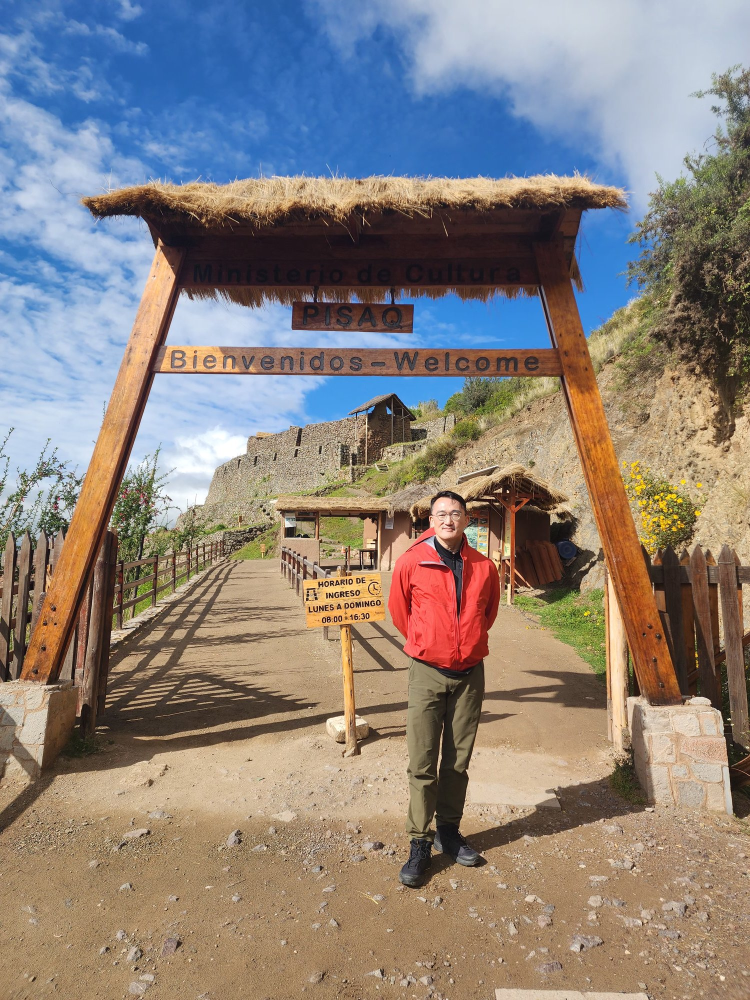
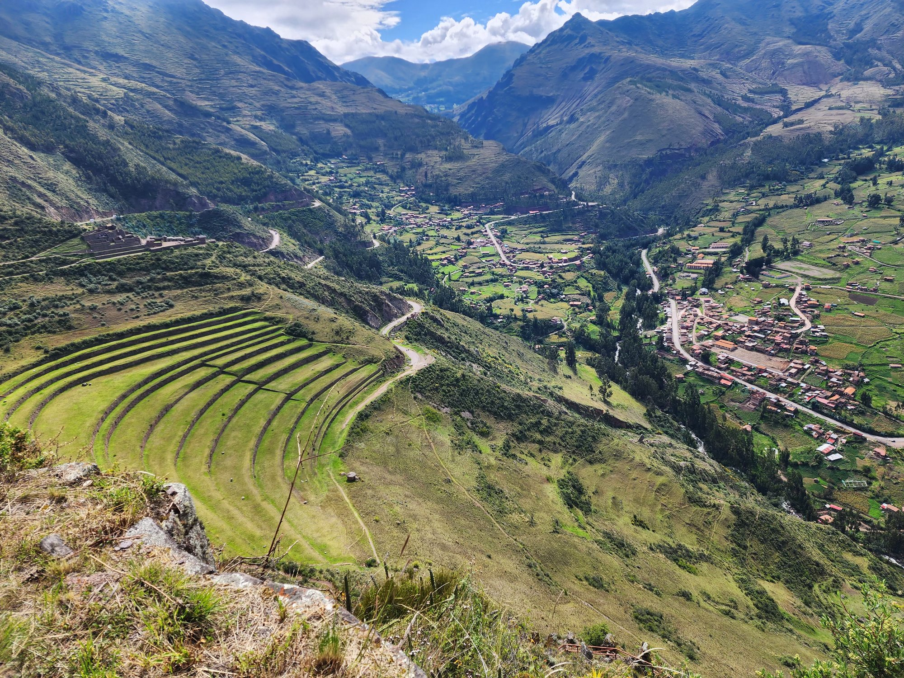
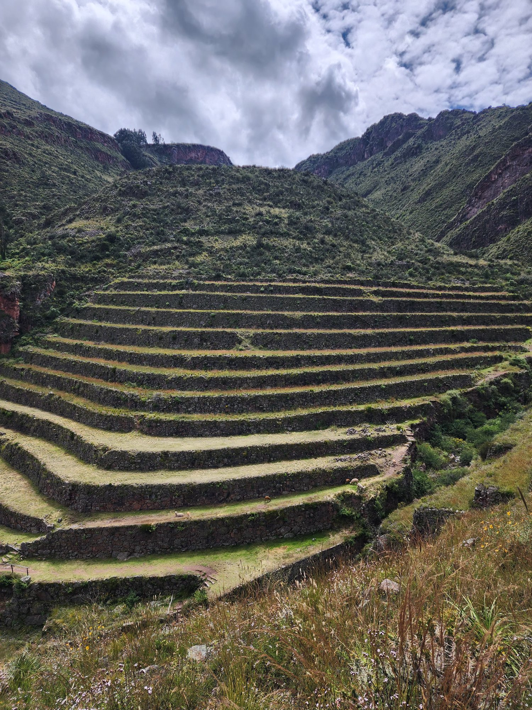
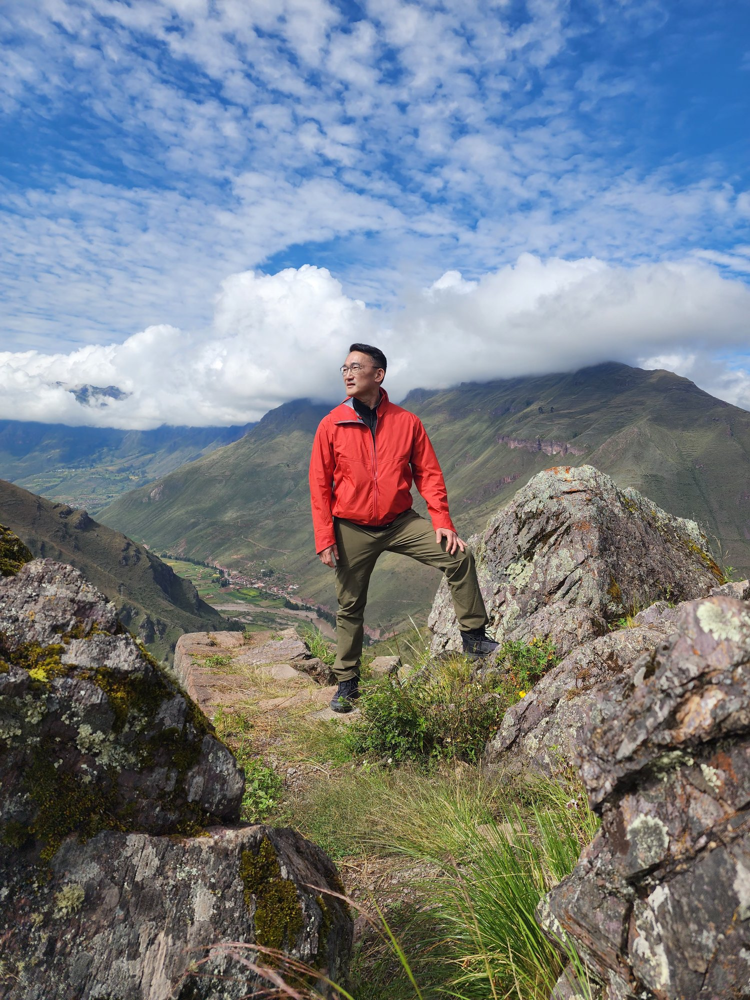
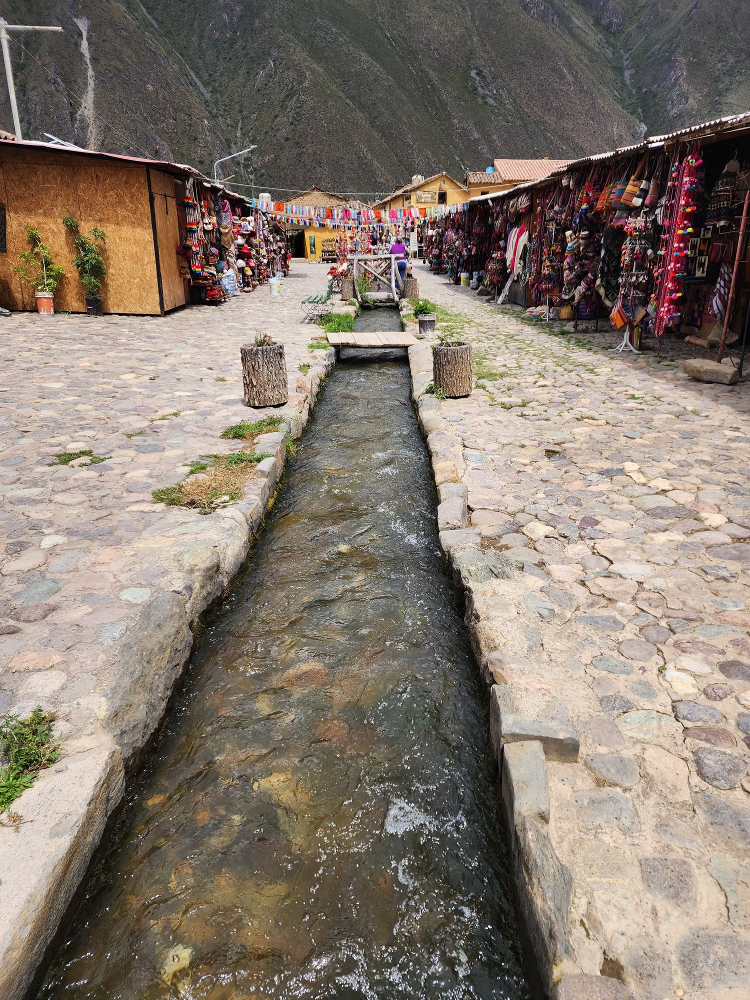
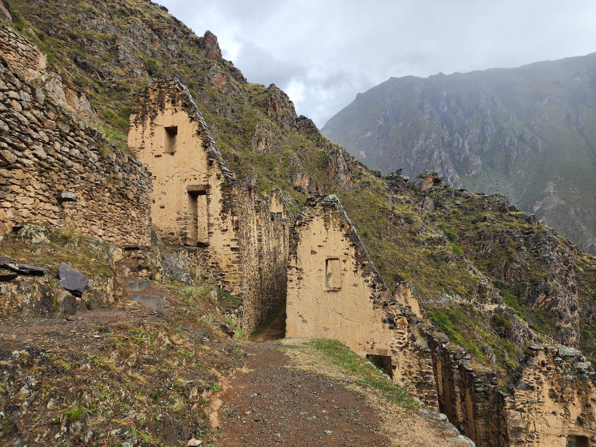
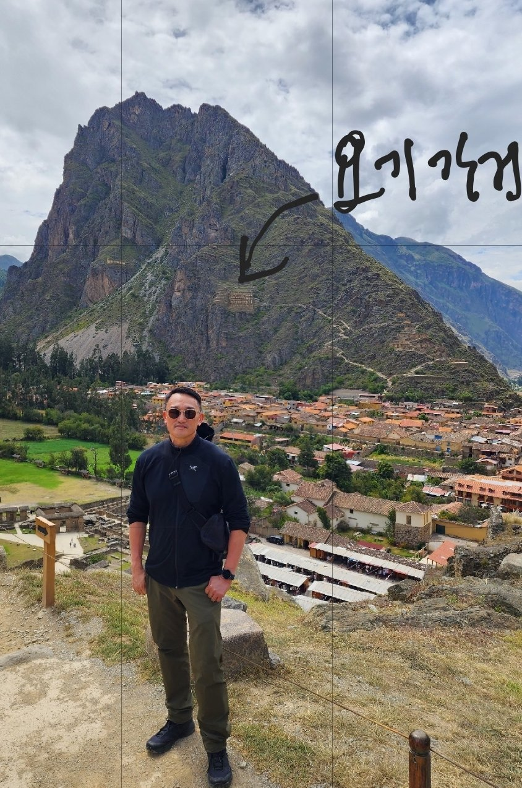
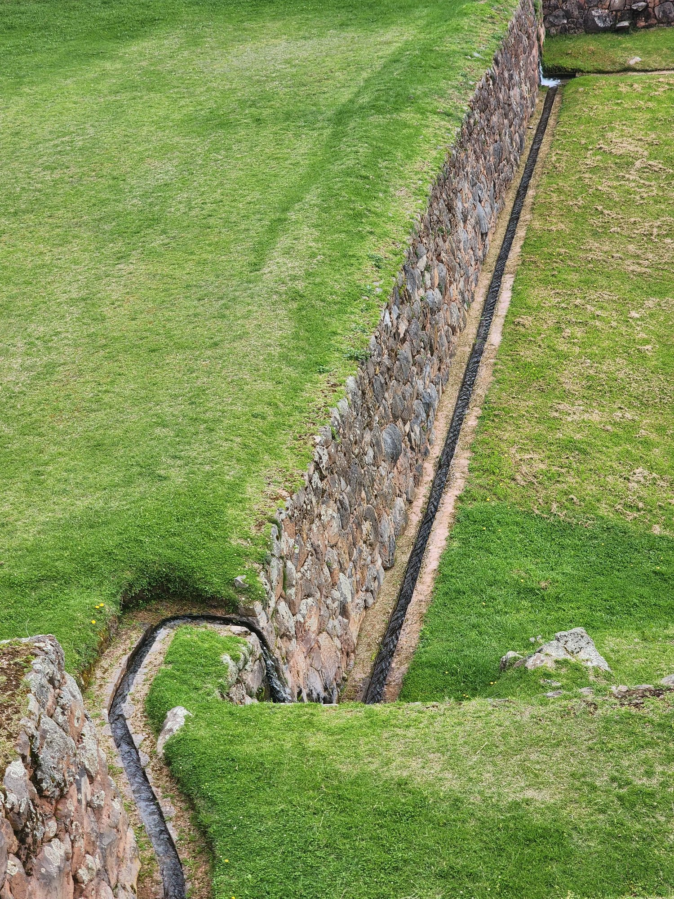
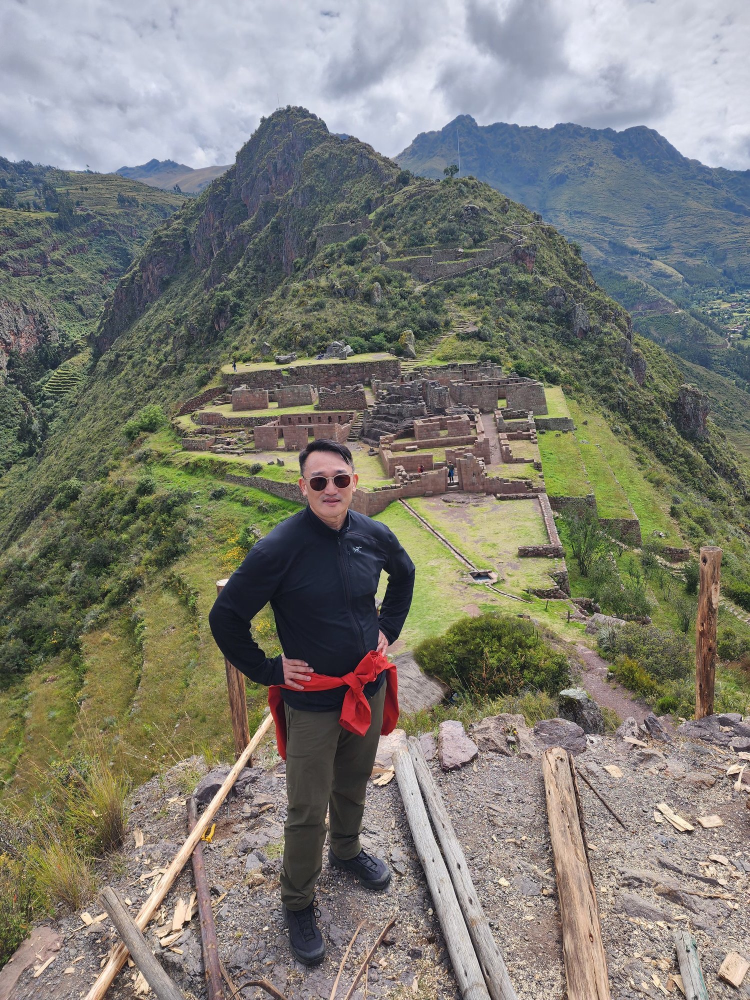

Early in the morning, I climbed into the car of the guide I had met at Sacsayhuamán the day before. He drove. About thirty kilometers northeast of Cusco, at the entrance to the Sacred Valley (Valle Sagrado), the small town of Pisac (Písac). A drive of just over an hour.
"How do most tourists come?" I asked. "They take a colectivo to the village and then walk up. Six hundred meters of climb. It's tough." He smiled. "We'll go the other way. By taxi up to near the summit, and then walk down. That's how you really see Pisac."
We parked at the entrance to the village and hired a local taxi. We followed an unpaved switchback road up the back of the mountain almost to the summit. A twenty-minute drive. We got out and began walking.
The whole site of Pisac unfolded in front of me. And — I could see right away what it meant to walk in the opposite direction. From below up, you only pass through. From above down — descending the ridge along the Inca Trail, you let the structure of the site reveal itself slowly through your body. The way an ancient Inca pilgrim would have walked it. Hour after hour, ridge to ridge, terrace to terrace, working your way down toward the village.
The guide walked ahead. At important spots he stopped and explained. His Peruvian Spanish and my imperfect Quechua and English mixed into a working language for understanding the structure.


From near the summit, looking back, the entire Sacred Valley lies at your feet. The Urubamba River runs through the middle of the valley, and along both sides, small villages dot the hillsides. Beyond them, on the horizon, are the snow-capped peaks of more than 5,000 meters. A radiant landscape.
And yet the first thing my eyes found in this view was not mountain or river or village. It was the water. The Urubamba running through the valley. Several tributaries coming down from the mountains. And especially — the multiple strands of canals running through the Pisac site itself. Water emerges from the springs above, irrigates each terrace, and runs down to merge with the river in the valley. Once these canals became visible, suddenly I understood why Pisac had been built on this site.
Pisac is not a terraced city. Pisac is a built form designed to descend with the flow of water.
The guide confirmed it. "There are several springs higher up on this mountain. Water starts there and passes through the entire site. And — the volume that flows now is nearly the same as five hundred years ago." I nodded. It was the same explanation I had heard a few days earlier in Ollantaytambo. The sacred water passes through the entire site.

Coming down, you cross terrace after terrace. Each terrace is — narrow ones five meters across, broad ones fifteen — and toward the top, the height of one tier rises to two, three meters. The vertical walls have been finished in Inca masonry. The seams are clean. Each terrace's ground is gently inclined, so that rainwater drains naturally without pooling. A structure that has not let its soil wash away in five hundred years.
The scale of the terraces astonishes. The whole mountain is a single great geometric pattern. Curve and straight line are mixed; each section has a different shape. Some rounded, some fan-shaped, some long and ribbon-like. Why so many forms? Because each section has a different microclimate. At different elevations, temperature differs; with different solar angles, daylight hours differ; with different wind directions, evaporation differs. The Inca farmer recognized all these differences, and grew crops suited to each section. The same principle as Moray, in chapter two. Pisac is the practical version of Moray.
This chapter begins with the experience of this descent. If the previous three chapters of part one looked at the several faces of Inca civilization — architecture and technology, intellectual achievement, hydraulic engineering — this chapter goes deeper into the single philosophy that runs through them all. And at the center of that philosophy, always, is water.


When you begin to learn Quechua, the most disorienting thing is the pronoun system. Quechua does not draw the sharp line that English draws between pronouns for people and pronouns for things.¹ More precisely: many objects are treated on a par with people. Mountains, rivers, lakes, stones, trees, sun, moon. The grammatical forms used for them are close to those used for human beings.
If an English-speaking traveler asks a Quechua grandmother "where does that river come from," the grandmother answers in a form like "she comes from there." The river is not "it" but "she/he." This is not the grandmother's clumsy English. It is her worldview. The river is a living being. It has a name, a temperament, a mood. Today calm, tomorrow fierce. Plentiful one year, lean the next. Just like a person.
At the center of this stands yaku (yaku).
Yaku is generally translated as "water." But the translation is not accurate. Yaku is the principle prior to becoming water. Or: the living thing that appears as water. Flowing water, springing water, falling rain, evaporating cloud, and even the body fluids that circulate within us — all are yaku. Different appearances, but the same being's many faces.
There is no English word that captures this exactly. Some scholars translate it as "living water," others as "water-being" or "water-person." All partial. Yaku is "water and at once something more".²
Yaku's mother is Mamaqucha. "Mother of the Sea." All water came from the sea and returns to the sea. The long journey between — evaporating into cloud, falling as rain, becoming a mountain stream, becoming a river, reaching the sea — is the life of yaku.
This sense of cycle is a startlingly accurate meteorological and hydrological model. The hydrological cycle that modern earth science discovered, the Inca knew in mythic language. Mamaqucha is evaporation; yaku is rain and river; the return to Mamaqucha is the inflow into the sea. Because they knew this, they had no need to lock water up. Water leaves and returns. Through our bodies, through our cities, in the end it returns. All water is borrowed for a moment, not owned.
This philosophy makes up the Inca half of the contrast we will see in chapter five. Where Rome treated water in the language of dominium (ownership), the Inca treated water in the language of yaku (being). This is why a sewer could not exist. Water cannot be discarded. The very thought of discarding it contradicts the nature of yaku.


Around water are other living beings. Mountain is Apu. River is Mayu. Lake is Qucha. Spring is puquio or paqarina.
Each has its own proper name. Near Cusco, Apu Ausangate, Apu Salkantay, Apu Picchu. These mountains are not part of the topography but beings with personhood. Annually offerings are made to them, and on certain days rituals are held. As Christians pray to saints, Andean people declare themselves "children of an Apu" and pray to the mountain spirits.
All this existed before the Inca, and did not vanish after the Spanish conquest. In chapter seven we will see how the Virgin Mary in the Cusco school of painting was depicted as a being overlaid upon Pachamama. Saint Isidore (the saint of farmers) was fused with Apu in the Andes. The various local manifestations of the Virgin Mary (the Virgin of Copacabana, the Virgin of Caravallo, and so on) are in fact local Pachamamas in ecclesial form. Beneath the Catholic exterior, the living world of the Inca persists.
Studying the philosophy of yaku, as someone with medical training, I feel a strange resonance.
The way modern medicine understands the human body has been quietly changing in recent decades. Twentieth-century medicine viewed organs as separate systems. Heart, lung, liver, kidney, brain. Each functioning independently. Doctors were divided into specialists, each handling their organ.
But twenty-first-century medicine is steadily moving into systems biology. The gut–brain axis, in which gut microbiota affect brain health. The discovery that chronic inflammation underlies almost every illness. The coupling of sleep–wake cycles with the immune system. The view that the whole body is a single circulatory organism is becoming, slowly, mainstream.
Where does the language for this turn come from? Within the Western medical tradition itself, the language is scarce. It must be borrowed from East Asian medicine (the circulation of qi), Indigenous traditions (the reciprocity of body and earth), ecology (the cycles of living systems).
And — the Inca concept of yaku is remarkably close to this language. The notion that water is one but exists in many faces. That a change in one face affects another. That the whole circulates without end. That the fluids inside the body and the river outside are different expressions of the same principle. We will return to this in chapter seventeen on Salutogenesis, but the connection is no accident. The same wisdom has been independently discovered in many traditions, because it is closer to the actual structure of the world.
The day after coming down from Pisac, I found a book in a Cusco bookstore. A book based on the doctoral dissertation of Jeanette Sherbondy.³ The title was The Canal Systems of Hanan Cuzco. Sherbondy was a late-twentieth-century American anthropologist who spent more than twenty years studying the cultural meaning of the canal systems around Cusco. What her book showed me was that — Cusco itself is one immense city of yaku.
Spanish chroniclers recorded that in Inca Cusco there had been a strange religious geography called the "ceque system."⁴ Ceque means "line" in Quechua. The system worked like this.
From the Coricancha (Temple of the Sun) at the center of Cusco, forty-one invisible lines radiated outward. Each line connected sacred points near Cusco — the huacas. A huaca was a spring, rock, hill, cave, tree, or specific location — any place that held spiritual significance in Inca religion. Along the forty-one lines, a total of 328 huacas were recorded.⁵
The chroniclers saw it as a complex astrological scheme. Each line belonged to a particular noble lineage (panaca), and the lineages took daily turns making offerings to their huacas. This functioned as a ritual calendar.
Twentieth-century scholars tried to crack the meaning. Astronomical alignment was one claim, genealogical signs another, the reflection of social class structure another. All partial.
Sherbondy's insight was decisive. She found that an overwhelming majority of the 328 huacas were sites associated with springs, canals, and water. More than two-thirds of the 328. Which means: the ceque system was a ritual calendar, a genealogical system, and simultaneously a map of Cusco's water-resource management.⁶
All the major springs and canals around Cusco were arranged on the ceque lines. The route from Coricancha to each spring was a "line" with formal meaning. Along that line, daily rituals were performed. The lineages that performed those rituals took on the responsibility for managing those springs. The ceque was thus an integration of religion and hydrology.
There is something more astonishing. The most important huacas of the ceque system — those closest to Coricancha, most sacred, receiving the most offerings — were paqarinas.
A paqarina is a spring connected to the origin myth of a particular noble lineage.⁷ In Inca belief, a lineage was held to have been born from a particular spring. In a mythic sense, the first ancestor emerged from that spring. The lineage's blood was therefore in a state of biological union with that spring. If the spring dried, the lineage declined. If the spring fouled, the lineage sickened. To protect the spring was the survival of the lineage itself.
Sherbondy saw this not as simple superstition but as the mythic expression of ecological wisdom. The ceque system, by binding Inca noble lineages with emotional, legal, and religious ties to specific springs, in fact made long-term conservation of water resources possible. Damaging a spring meant insulting an ancestor, and so springs were protected. Sacredness functioned as environmental ethics.
This is no joke. One of the points where modern environmental policy fails is precisely the absence of emotional and spiritual bond. You can protect a forest by law, but if people have no affective relationship with that forest, the law is easily worn down. By contrast, if it is the spring from which one's ancestor emerged — without any law, it is protected. Sacredness is stronger than legality.
The ceque system was officially destroyed after the Spanish conquest. In the 1570s, under Viceroy Toledo's extirpation campaigns, the principal huacas were systematically removed. Paqarina springs were covered by churches. The rituals along the lines were prohibited.
And yet the geography remained. The springs around Cusco are still there. The rivers are still there. And in the memory of Andean farming communities — and in the personal memories of certain lineage members — fragments of which spring belonged to which lineage have been preserved.
From the mid-twentieth century onward, in some rural areas of Peru there has been a ceque-revival movement. Efforts to recover forgotten paqarinas and connect them to the identity of communities. Some succeeded, some failed. But the fact itself — that the spiritual geography of the Inca has not been completely erased — is important. Stones and springs remain after five hundred years.
In the previous chapter I said that Tipón's water has flowed for five hundred years. Now we see that this is not coincidence. That Inca hydraulic engineering survived five centuries is not a matter of technique alone. Beneath it lay a spiritual geography. What Sherbondy's research on the ceque revealed is this: physical canals and the spiritual map were two faces of the same system.
Now I return to Pisac.
The Pisac site is divided into four major sectors.⁸ Each had a different function, and all are connected by a single flow of water.
The Intihuatana sector. Near the summit, the religious center. The site of the "stone that ties the sun." Same function as the Intihuatana at Machu Picchu, but Pisac's has a far more elaborate arrangement. A semicircular stone structure surrounds it, with various ritual spaces inside. Here is where the ceremonial water begins. Water diverted from springs higher up the mountain first passes through this ritual space.
The Q'allaqasa sector. The military fortress. Built atop a cliff, it commands a view of the entire Sacred Valley. It seems as if no practical water is needed here — but in fact every stone here is set within an intricate rainwater drainage design. Even in heavy rain, the fortress is not eroded.
The P'isaqa sector. The residential district. The home of Inca nobility and religious officials. Here water was distributed for everyday use. Cooking, washing, drinking. Even this everyday use, however, lies downstream of the ceremonial water. That is, water first offered to the gods is then used for people.
The Kanchis Racay sector. Administration and storage. And the distribution point for water. Here the canals branch into many channels for the agricultural terraces below. Water that has come down from above is divided among the terraces in calculated proportions, so that even in the dry season every field receives a fixed amount.
All four sectors are connected by one canal system. Water comes down from the mountain, passes through the temple, through the noble residences, through the common quarters, and at the distribution point splits and flows into the fields. At each stage the water plays a different role. And at the end, it is absorbed by the fields and returns to the earth. There is no sewer anywhere.
One spot deserves attention in particular. Between Q'allaqasa and P'isaqa, the main canal passes through a small stone structure called the baño de la ñusta.⁹
This same form exists at Ollantaytambo. The water passes over two small stone basins, falling through a narrow groove in the stone above. The water within the basin holds perfect stillness. It is sized for one person to sit and bathe.
This is called the "princess's bath" because of the romanticization of the colonial era. In reality it was likely a ritual purification space. A place where a noble or priest cleansed the body before an important ceremony. What matters here is — not just the function. It is the precision of the structure.
The angle at which the water falls, the size of the basin, the location of the drain. Every detail is designed so that water does not splash, the sound of the water is gentle, and water touches a sitting person at exactly shoulder height. A 500-year-old structure, and even today, when I touch it, the precision is alive.
This small bath compresses the spirit of Inca civilization. Even ordinary water is ritual. Washing the body is not mechanical hygiene but a sacred act. Water passes through our body and purifies us, and we return our gratitude to the water. This is the principle of ayni — the philosophy of reciprocity we saw in chapter three — dissolved into daily life.

The afternoon was deepening. Walking down the Pisac site with the guide. The opposite ridge, where the tour buses do not reach. From the summit to the village, purely along the old Inca Trail.
This trail astonishes. Five-hundred-year-old stone steps still in nearly perfect condition. At important points there are niches where offerings were placed. At regular intervals, small canals cross the path, with water running beneath. A structure in which path and water descend side by side. The walker and the channel are constantly meeting.
This experience was special. I could feel that I was going down at the same speed as the flow of the water. The water descends at its own pace — fast where steep, slow where flat. I match my pace to the body's tiredness. Now and then the canal passes over the path and I stop to look at the water. The water briefly passes beneath my feet. And then we go each our own way.
This rhythm is the spiritual dimension of the Inca Trail. The trail is not merely a means of movement. It is the form of a meditation that fits the body to the flow of water. Climbing and descending the mountain is breathing in time with the rise and fall of the canal. In this rhythm body and mountain and water become one flow.
I want to give a paragraph here. One of the things I have learned over decades of relationships with Indigenous communities is how to walk with water.
The grandmothers on the North American plains, when they go to a river, first wash their hands. It is not simple hygiene. It is greeting. A confirmation that the river recognizes the grandmother and the grandmother recognizes the river. And one takes only as much as the body needs. When taking, one says thank you. This relationship in Cree comes close to wahkohtowin. "All things connected as kin." The river is kin. To kin you must say hello.
This custom is not superstition. It has practical effect. Those who see water as kin do not pollute it. As one does not poison kin. And when kin are in trouble (drought, pollution, blockage), they notice immediately and act. The health of kin is the health of self. This relational view made thousands of years of water management in the Andes and on the North American plains possible. The deep logic of the paqarina system above is the same.
Today we speak of "water shortage" and "water pollution." This is, in fact, another name for the shortage of relation. We no longer see water as kin, so the suffering of water is not felt as our suffering. So we are late. Late to notice, late to act.
The yaku philosophy of the Inca, and its sibling, the river philosophy of North American Indigenous peoples, are worth learning again. This is not regression to the past. It is the future's wisdom that we need now.
An Inca city is generally divided into two halves.¹⁰ Hanan and Urin. "Upper" and "lower." Cusco, Pisac, Ollantaytambo, even Machu Picchu have this structure. Along a river or a road as boundary, the city is halved. Each half has its own noble lineages, its own temples, its own canal systems.
This is not a simple administrative division. It is a cosmological structure. Hanan is associated with fire, masculinity, sun, ascent. Urin with water, femininity, moon, descent. These two principles were understood not as opposition but as complementarity. The whole cosmos is the dance of the two principles.
This is strikingly close to East Asian yin-yang thought. Opposites contain each other, give birth to each other, become each other. Without Hanan there is no Urin; without Urin there is no Hanan. The two halves do not exist apart from each other; they are the breath of one whole.
And there is a place where Hanan and Urin meet. Tinkuy. Meaning "encounter" or "exchange."¹¹ The point where two rivers join, the point where two roads cross, the place where two lineages marry. Tinkuy is at once a physical place and a ritual time.
The very structure of Cusco is a vast tinkuy. The two rivers that pass through the city — the Tullumayu and the Saphi — meet at the site of the Coricancha.¹² That is, the Temple of the Sun was built where two waters meet. This is why this is the spiritual center of Cusco. This is why it is called the navel of the world (the name "Cusco" means "navel" in Quechua).
The concept of tinkuy mattered in ritual life as well. On certain festivals, the Hanan and Urin lineages would engage in ritual fighting. They threw stones, jostled, mingled. It looks like violence, but it is in fact the ritualization of conflict. By having the two halves publicly clash each year, the tension is prevented from spreading silently through the entire society. After the clash they drink chicha together and dance. The tension is resolved.
Modern society has lost this wisdom entirely. We try to conceal or remove conflict. The result is the secret persistence of conflict and its explosive eruption. The Inca were different. They built regular sites of friction, and at those sites the friction became productive.
This is another lesson the Inca duality offers us. Total harmony is illusion. Conflict is a condition of being. The problem is not to remove it, but to let it meet well. The wisdom of tinkuy.
Writing this chapter, one problem keeps recurring. How shall we describe Inca religion? The Spanish chroniclers cast the Inca as a "sun-worshiping civilization." This frame has dominated our understanding for five hundred years.
But put together everything in this chapter — the philosophy of yaku, the femininity of Pachamama, the canal-geography of the ceque system, Apu and Mayu and paqarina, the duality of Hanan and Urin — and we see that the sun was only a part of Inca religion, not the whole. Probably not even the most important part.
The sun (Inti) was the official patron of the Inca royal house. The emperor was called "Son of the Sun" (Inti Churin), and the Coricancha was officially the "Temple of the Sun." The Spanish saw only this. Because in their Christian frame, there had to be a "supreme deity" for things to be intelligible. They asked who the Inca's "supreme god" was, and the answer was the sun. So the schema "Inca = sun worship" was made.
And yet in the daily religious life of the Inca, the divinity most often encountered was not the sun. It was Pachamama (earth), yaku (water), Apu (mountain). Each morning women sprinkled chicha to the ground for Pachamama. Before lifting their tools, men prayed to Apu. When a child fell ill, one went to the spring and asked yaku. This daily religion was the substance of Inca faith.
The sun was the god of the emperor. Pachamama and yaku and Apu were the gods of the people.
Why does this distinction matter? Because it explains what survived after the Inca Empire fell.
After the Spanish conquest of 1533, the sun-worship system was dismantled at once. The gold sun of the Coricancha was melted. The temples of the sun were dismantled or converted into churches. With no emperor, the theology of "Son of the Sun" vanished. Official Inca religion collapsed quickly.
But Pachamama and yaku and Apu did not vanish. Because these were not the religion of the state. They were the religion of the village community. Things that mothers taught daughters, that grandfathers taught grandsons. Spain could not station a priest in every village. And even the priests who were stationed often allowed these traditions to be translated into Catholic vocabulary. The way the Virgin in the Cusco school of painting overlapped with Pachamama.
The result is that today, Andean farming communities believe two religions at once. They go to mass on Sunday and on August 1 they perform the Pachamama ritual. They speak the name of the Virgin Mary, but really they are speaking to Pachamama. This is not double belief; it is integrated belief. And at the heart of this integration is the popular religion of the Inca, the divinities of water and earth and mountain — alive.
This is the chapter's last insight. The heart of Inca civilization was not in the emperor but in the people. And at the heart of the people was the philosophy of water. The state may fall but the people remain. The emperor may vanish but the spring still flows. Sun worship may shatter but Pachamama remains in the earth.
This structure persists for five centuries. This is no miracle. This is the essential resilience of popular philosophy. Elite culture falls with the state. Popular culture, because it is rooted in the earth, lives longer. The true legacy of the Inca Empire is not its gold. It is in the small daily gesture of an Andean farmer sprinkling chicha to the ground in the morning.
It was evening by the time we came down from the Pisac ruins to the village square. A market was open in the plaza. Quechua women had spread out brightly colored textiles, piled different varieties of potato, sold chicha (fermented maize drink) from large bowls. I stopped before one grandmother and bought a cup of chicha.
Before handing me the cup the grandmother made a small motion. She tilted the cup just so, and let a few drops of chicha fall to the ground. She did this almost without noticing, naturally. A daily gesture. Then she handed the cup to me.
Taking it, I asked, "That was an offering to Pachamama, wasn't it?"
The grandmother smiled. She knew no English, but she had grasped the question. She pointed at the ground with her finger and said, "Pachamama." Then she pointed at her heart and murmured something. It was Quechua. I could not understand. But I could guess the meaning.
"This is not just ritual. This is the moment when something inside my body connects with the earth."
I drank the chicha. Beneath the sharp wind of the highland, beneath the Andean evening light, in a 500-year-old village square. A cup of fermented maize-water passed through my body. That water will return to yaku someday. I might return it tonight to a small spring in the mountain, or one day my body, when it becomes earth, will return it to the land. Either way, it returns.
Yaku is borrowed for a moment. It is not owned. To be grateful for that brief borrowing, to let it flow as it flows, and when the time comes to return it with thanks. This is the Inca philosophy of water. And this, perhaps, is the wisdom we most need in our time.
This chapter ends part one. I arrived in Cusco and stood before the megaliths of Sacsayhuamán with my first question — how, in only ninety-five years? Following that question, I saw many faces of Inca civilization. The precision of architecture, the refinement of agriculture, the delicacy of astronomy, the wonder of medicine, the order of administration, the marvel of hydraulic engineering, and through it all, the philosophy of water.
I see now that the original question has shifted. "How was it possible" became "what kind of society made it possible," and now "what kind of worldview made it possible." And that worldview is astonishingly elaborate, astonishingly philosophical, and astonishingly — contemporary. Much of the wisdom we are now scrambling to rediscover in the face of twenty-first-century ecological crisis was already systematized by the Inca five hundred years ago.
And — that very civilization, with that worldview, met another worldview five hundred years ago. The result of that meeting made the world of the next five hundred years.
From the next chapter (part two), we face that meeting head-on. The forty years of slaughter that began on November 16, 1532, in Cajamarca. And the way that slaughter was formalized in the languages of law and theology. The way it was globalized through silver and sugar and slavery. The way it crossed Asia and struck the coasts of the Korean peninsula.
Into the history of collision.
¹ On the pronoun system and animistic grammar of Quechua see Bruce Mannheim, The Language of the Inka since the European Invasion (Austin: University of Texas Press, 1991), chapter 3.
² On the untranslatability of the concept of yaku see Catherine Allen, The Hold Life Has: Coca and Cultural Identity in an Andean Community, 2nd ed. (Washington, D.C.: Smithsonian, 2002), especially the introduction and chapter 2.
³ Jeanette E. Sherbondy, "The Canal Systems of Hanan Cuzco" (Ph.D. diss., University of Illinois at Urbana-Champaign, 1982). The dissertation was not commercially published, but her subsequent papers appeared in major journals.
⁴ The most detailed primary source on the ceque system is Bernabé Cobo, Historia del Nuevo Mundo (c. 1653), especially Book 13. A modern study is R. Tom Zuidema, The Ceque System of Cuzco (Leiden: E. J. Brill, 1964).
⁵ On the lists of forty-one lines and 328 huacas see Zuidema, op. cit., and Brian S. Bauer, The Sacred Landscape of the Inca: The Cusco Ceque System (Austin: University of Texas Press, 1998).
⁶ Jeanette Sherbondy, "Water and Power: The Role of Irrigation Districts in the Transition from Inca to Spanish Cuzco," in Irrigation at High Altitudes: The Social Organization of Water Control Systems in the Andes, ed. William P. Mitchell and David Guillet (Washington, D.C.: American Anthropological Association, 1994).
⁷ On the concept of paqarina see Frank Salomon, The Huarochirí Manuscript: A Testament of Ancient and Colonial Andean Religion (Austin: University of Texas Press, 1991).
⁸ On the four sectors of the Pisac site see Ann Kendall, Archaeological Investigations of Late Intermediate Period and Late Horizon Period in Cusichaca, Peru, BAR International Series (Oxford: BAR, 1985).
⁹ On the "baño de la ñusta" structure see Kenneth R. Wright, Ruth M. Wright, Alfredo Valencia Zegarra, and Gordon F. McEwan, Moray: Inca Engineering Mystery (Reston, VA: ASCE Press, 2011), discussion in chapter 5.
¹⁰ On the Hanan/Urin duality see R. Tom Zuidema, Inca Civilization in Cuzco (Austin: University of Texas Press, 1990).
¹¹ On the concept of tinkuy see Peter Gose, Deathly Waters and Hungry Mountains: Agrarian Ritual and Class Formation in an Andean Town (Toronto: University of Toronto Press, 1994), chapter 6.
¹² On the confluence of Cusco's two rivers see Brian S. Bauer, Ancient Cuzco: Heartland of the Inka (Austin: University of Texas Press, 2004), chapter 4.